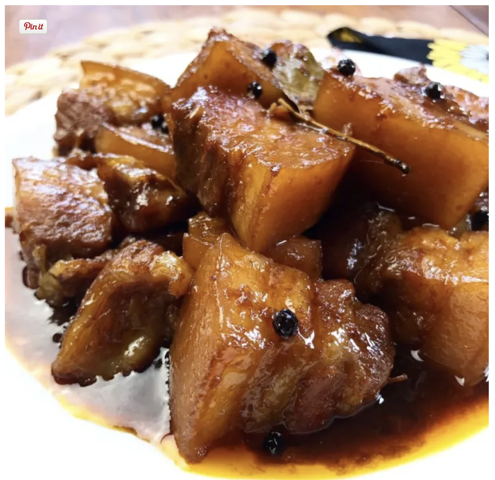

Adobong Baboy

Ingredients
- 6 pcs prok belly cut into cubes
- 1 teaspoon pepper
- 1/2 cup of cane vinger
- 1 teaspoon dark soy sauce
- a pinch of salt
- a pinch of sugar
- 3 cloves garlic
- 1/2 onion sliced
- 1/4 cup of water
- laurel leaves
Steps
- Fry in a hot pan the pork belly until skin is golden brown.
- Fry the garlic and onion.
- Put everything together except the vinegar, lower the heat, cook for 30 to 40 minutes until chicken is cooked.
- Put the vinger last and serve with rice.